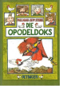

Die Opodeldoks

Wenn es dem kleinen Deldok night gelungen ware, mit seiner selbst gebastelten Katapult-Drachen-Flugmaschine un seiner Freundin, der Henne Helene, eines schonen Tages uber die Berge zu fliegen, waren sich die Opodeldoks aus dem Grasland und die Waldleute aus dem Waldland sicherlich bis heute fremd geblieben.